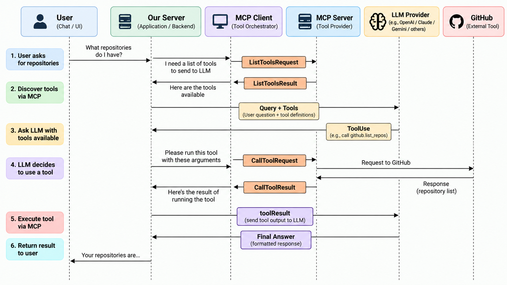

End-to-End Request Flow
Tracing a single user query through every layer of the MCP pipeline — from the first keystroke to the final answer.
The scenario
A user opens an AI assistant and types:
Behind the scenes, this simple question triggers a coordinated sequence of steps across the host application, the MCP Client, the MCP Server, and the external service. Let's trace each step.
Sequence diagram

The components involved
(your app)
(embedded lib)
(e.g. code repos)
(e.g. GitHub)
(LLM inference)
Step-by-step walkthrough
-
1User submits the query
The user types their question and hits send. The host application receives the raw text and begins preparing the request to the AI model.
-
2Host requests the tool list
Before calling the AI model, the host application needs to tell it what tools are available. It asks the MCP Client: "What tools do our connected MCP Servers expose?"
-
3MCP Client sends
tools/listThe MCP Client sends a
tools/listrequest to each connected MCP Server. Each server responds with its tool schemas — names, descriptions, and input definitions. -
4Host calls the AI model with tools attached
The host application bundles the user's message and the complete list of available tool schemas into a single inference request and sends it to the AI model.
-
5AI model decides to call a tool
The AI model analyses the query and the tools available. It determines that answering the question requires calling a specific tool — for example,
list_repositories. It returns a structured tool-call response instead of a plain text answer. -
6Host asks the MCP Client to execute the tool
The host application reads the AI model's tool-call response, extracts the tool name and arguments, and passes them to the MCP Client for execution.
-
7MCP Client sends
tools/callThe MCP Client routes the call to the correct MCP Server and sends a
tools/callrequest with the arguments the AI model specified. -
8MCP Server calls the external API
The MCP Server receives the request, validates the arguments, authenticates with the external service (e.g. a code hosting API), and makes the actual API call. This is where the real-world data fetch happens.
-
9Results flow back through the MCP layer
The external API returns data to the MCP Server. The server serialises it into a
tools/callresponse and sends it back to the MCP Client, which returns it to the host application. -
10Host sends tool results back to the AI model
The host application appends the tool results to the conversation and sends everything back to the AI model for a second inference pass.
-
11AI model generates the final answer
Now armed with real data from the external service, the AI model produces a natural-language answer grounded in actual results — not a guess.
-
12User receives the answer
The host application renders the AI model's response and displays it to the user. The entire flow is complete.
Visualising the sequence
Why so many steps?
The flow looks involved, but each component has exactly one responsibility. Notice what you — as the host application author — never have to implement:
- The tool schemas for the external service
- The authentication logic for the external service
- The HTTP calls to the external service
- The response parsing and serialisation
All of that lives inside the MCP Server. Your application's only job is to connect to the MCP Client, pass the tool list to the AI model, and relay the tool results back.